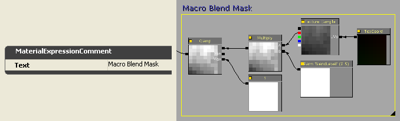
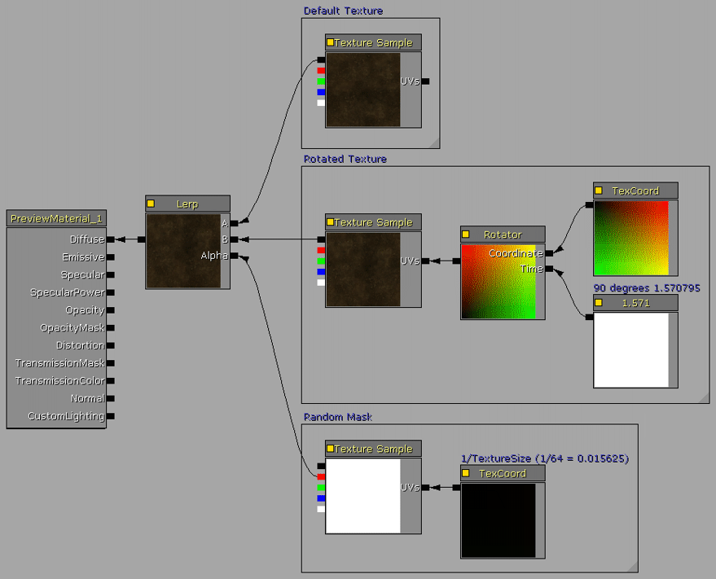
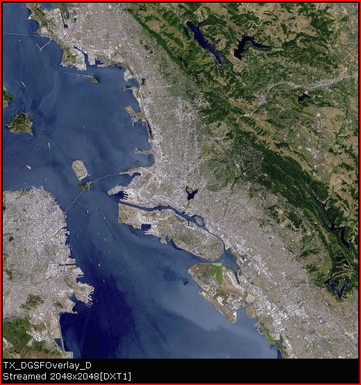
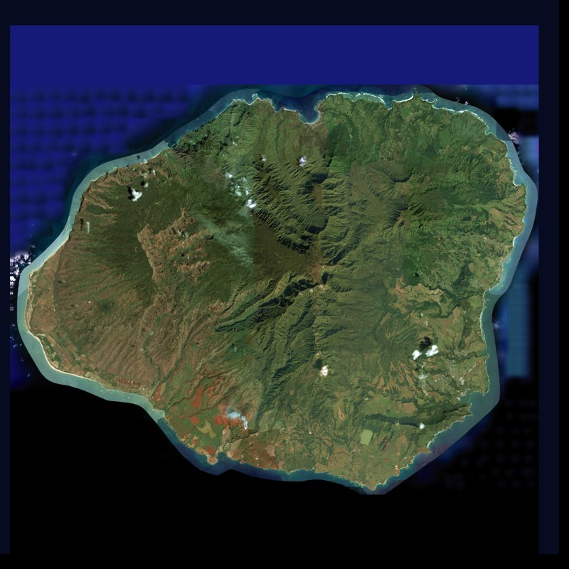

Terrain Advanced Textures
Overview
Terrain texturing is an enormous subject with a wide variety of methods and solutions. This tutorial will cover a few methods available in Unreal Engine 3 for managing common video game terrain texturing issues, along with methods of improving the quality of terrain texturing and increasing detail. This tutorial is divided into sections of increasing complexity that show solutions for various texturing issues.
NOTE: This is an advanced tutorial and assumes that you are familiar with the following:
Please review the appropriate UDN pages if you require further information or if you need to brush up on any of these subjects.
There are two major considerations when designing the texturing system for terrain: performance and realistic detail. In most cases there is a tradeoff between these two with current rendering hardware and software, where performance results in low realism, or high visual quality results in a significant performance penalty.
Terrain Texturing Caveats
There are a number of technical and artistic issues that plague level designers when attempting to create a realistic visual representation of a geological terrain style.
Texture Scale
In most cases, the UV scale for textures applied to terrain are adjusted so that the texture style looks relatively accurate for near-field viewing. Blades of grass or small rocks should usually be scaled to a similar size of their real-world counterparts. The issues with this are that tiling can become more apparent as you look further into the distance, and that a specific size texture can only contain a specific amount of detail and variety, usually the smaller the texture resolution, the more noticeable the tiling and also much less detail.
If the texture UV scale is set small, tiling is often very noticeable.
If the texture UV scale is set large, tiling is often less noticeable and there appears to be more variety in far detail, but the terrain near to the camera usually looks blurry and the detail scale of objects in the texture such as grass or rocks appear larger than real-world.
Texture Tiling
Since textures created for use on terrain are usually of 512x512, 1024x1024 or 2048x2048 resolution, it is difficult to obtain texture mapping across the surface that contains both a wide variety of detail and is free of visual tiling artifacts. In most cases the visual differences in the texture, such as changes in hue or brightness across the texture, or the presence of specific detail such as a large rock in the center of the texture, can cause the tiling to become more noticeable as you look further out along the camera view.
Fillrate
Since terrain is often used for creating large outdoor scenes, it usually covers a substantial amount of the screen area, commonly 50% to 75%. As the terrain material complexity increases, it can require more processing power to create the texturing used for the texels rendered to the screen. Video adapters with slower GPUs and lower fillrates will result in slower rendering times and lower performance.
The Unreal Engine
The terrain system in the Unreal Engine has specific limits on the number of materials that can be applied and the number of shader instructions that can be executed. The exact numbers varies depending on the layering design and the limitations of the specific video adapter hardware. Shader Model 2 and 3 video adapters support 16 Texture Samplers. Each unique texture used in each terrain material will require one of these samplers. Note however that in most cases Shader Model 2 video adapters will be unable to render a terrain material layer setup as complex as Shader Model 3 video adapters. The Texture Samplers will be covered in greater detail later in this tutorial.
Due to these limitations in hardware and rendering, it is prudent to design the entire terrain material setup to use as few individual Textures, Materials and the lowest possible Instruction count to achieve the desired texturing results.
Designing Materials for Instancing
The Unreal Engine Material system supports a feature called Material Instancing. This essentially allows for new Materials that are based on a variation of a Parent Material. The Parent Material includes one or more of the Parameter style Expressions, which are exposed on the Material Instance allowing a subset modification of the Parent Material properties without the overhead of another separate Material. Instanced Materials do not require an expensive recompile of the Material.
A simple example would be a Parent Material and a Material Instance that provided a second material of a different color. There would be no reason to create two individual Materials when you could simply expose a parameter on the Parent that allowed for changing the RGB hue on any Instanced copy of it.
Using Material Instancing and the Parameter Expressions, one Parent Material can have multiple Instances with various colors, opacities, blends, etc.
The most common Parameter style Expressions that are used in Materials includes the ScalarParameter and VectorParameter Expressions. The ScalarParameter Expression is similar to the Constant Expression as it has a single floating point value, and the VectorParameter Expression is similar to the Constant4Vector Expression as it has four floating point values, ARGB.
Each Parameter style Expression has a "ParameterName" property that allows specifying a name for the parameter that is seen in any Instance of the Material. You would commonly use a descriptive name such as "DiffuseColor" or "BlendAmount".
Note that each Material name and Parameter name must be unique when using Material Instances, otherwise when the final material for a terrain component is compiled, the resulting rendered material may be incorrect. Using the same name for more than one Parameter will for example cause the compiled material to use the first occurence of that specific name for all identical named instances.
Material Expression Building-Blocks
Many of the complex material systems we will be designing for the terrain are using a series of common "building blocks" for each terrain layer texture. So first we will examine and describe the functionality of these material sections.
Diffuse Texture Brightness and Tint
To reduce the number of texture samples on a terrain, and the total texture count for a game title, it is a simple task to create a brightness and tint modifier. Instead of creating multiple versions of a texture file with varying brightness or tint, such as a light brown and dark brown sand, simply modify the texture within the material using a Multiply Expression that modifies the RGB channels with the values from a VectorParameter Expression.
Change the VectorParameter RGB properties to modify the texture brightness and tint. Values of 1.0,1.0,1.0 are default. The A (alpha) property value of the VectorParameter Expression can be left at its default of 1.0.
Diffuse Detail Texture Brightness
When using grayscale Detail textures to supplement the near-field viewing quality of large scaled diffuse textures, it is often required to adjust the brightness level of the Detail texture so that it does not change the overall brightness of the diffuse texture. It is possible to accomplish this by setting the Detail texture's properties for UnpackMax, but then the brightness is fixed at that value. By using a Multiply Expression that modifies the RGBA channels with the value from a ScalerParameter Expression, we can modify the brightness as required for every instance of the Detail texture.
Change the ScalerParameter property to modify the texture brightness. A value of 1.0 is default.

NormalMap Detail Texture Blend and Strength
NormalMaps can often greatly improve the realism of the larger rock textures used on terrain, such as craggy cliff faces and bare rock mountains. Due to texture size limitations and the common texture resolutions of 1024x1024 or 2048x2048, the diffuse rock textures are often scaled to a large size in the TerrainMaterial to simulate real-world visual appearance. If the player can approach these rock textures, the large texture scale usually results in a blurry and large pixelated look to the rock. In addition to using a detail texture on the diffuse rock texture, a detail texture can also be used on the NormalMap.
When mixing two NormalMap textures, the Blue channel of one of the textures must be removed or it essentially diminishes the bump rendering. The VectorParameter and Multiply Expression strip out the Blue channel from the Detail NormalMap texture prior to mixing it with the main NormalMap texture. The R and G channels of the VectorParameter Expression can also be adjusted above 1.0 to increase the bump strength of the Detail texture.
Mask Blend Level
Some of the custom materials presented below utilize a grayscale Mask to perform a number of functions such as texture blending. By utilizing a ScalerParameter Expression controlling a Multiply Expression, the blend weight Mask can be modified directly in the Material for simplified value adjustment and to allow for Instancing. The Clamp Expression and Constant of 1 connected to its Max node ensures that the Mask range is always between 0.0 and 1.0.
Desaturation Expression
The Desaturation Expression is used for modifying an existing texture to reduce the color saturation. This can be used to modify a terrain texture to provide a more natural blend of shades on a terrain geological system, such as neutral rock colors or dead grass. It can also reduce the total number of textures required for a shipped video game title or map through the reuse of similar textures that are modified in Materials to alter their color, saturation, brightness, etc.

Complex Material Design Notes
Naming Conventions
To improve package organization and easier re-use of engine objects, a simple but strict naming convention should be utilized for all assets that are created. A recommended convention system would be as follows:
| TX_TextureName_D | diffuse texture |
| TX_TextureName_DO | diffuse texture with opacity in alpha channel |
| TX_TextureName_DS | diffuse texture with specular in alpha channel |
| TX_TextureName_N | normalmap texture |
| TX_TextureName_O | opacity texture |
| TX_TextureName_S | specular texture |
| MAT_MaterialName | material |
| TM_MaterialName | terrain material |
| TLS_SetupName | terrain layer setup |
For specific custom textures the following naming conventions are used:
| TX_Detail[name] | detail texture 8-bit grayscale or packed bitplanes | eg. TX_DetailRock1 |
| TX_Macro[name] | macro texture 8-bit grayscale or packed bitplanes | eg. TX_MacroDirt |
| TX_Mask[name] | mask texture 8-bit grayscale or packed bitplanes | eg. TX_MaskRandom |
When using packed bitplane versions of detail, macro and mask textures, it is usually prudent to name the texture according to each bitplane content for easier self-documenting use. For example, a detail texture TX_DetailRockGrassDirt would contain three 8-bit packed textures into the RGB bitplanes for R=Rock, G=Grass, B=Dirt. The Alpha channel is unused in this example and could in fact provide a fourth detail texture.
Comment groups and Expression Descriptions
When constructing complex material systems, it is a prudent choice to use the material expression Description feature and the Comment object. This will greatly improve the organization and readability of complex material layouts. Each expression includes a description property called "Desc" that can be set to a text string for commenting on the function or values of that particular expression.
The comment object is added by right-clicking on the Material Editor workspace and choosing Comment from the pop-up menu, or by pressing "c". The comment object can be wrapped around multiple existing expressions to provide a graphical group box of a material functional section. When adding a new comment object it will also auto-size itself to wrap around a set of currently selected expressions.
Expression Description:
Comment box:

Modifying Assigned Setups
When performing substantial modifications to a TerrainLayerSetup that is assigned to a Terrain object, such as inserting or deleting Material items in the array, changing the order of items in the array, or modifying the Noise, Height or Slope properties of one or more Material items, a significant performance boost can be realized by unassigning the TerrainLayerSetup from the Terrain object first. This is usually only benefitial if you are inserting or deleting items or if you already know the correct property value changes for Noise, Height or Slope, as you forfeit the on-screen visual feedback of the rendered terrain view. However, for significant changes, such as deleting multiple Material items it is often faster to unassign the TerrainLayerSetup from the terrain object, make the changes, then re-assign the TerrainLayerSetup.
If you are storing assets directly in the map file, be sure to re-assign the TerrainLayerSetups to the terrain object prior to saving the map, or the automatic unused asset culling will delete the unused assets from the map file.
Recaching Terrain Materials
As changes are made to the terrain material system, such as modifying Materials, TerrainMaterials, TerrainLayerSetups, and the layout order of these objects, the terrain currently rendered in the editor viewport may not update to show these changes. Click on the Terrain Editing Mode button on the left toolbox icons to display the Terrain Edit dialog, then click on the Recache Terrain Materials "RM" button to force a recache. As soon as the Recache terrain shaders prompt message box disappears, the terrain system will use the updated material setup.
GPU Shader Support
When support for the older install-base of end-user hardware is desired, the degree of level design and terrain complexity must be scaled back to maintain a workable render system with a reasonable visual quality. Many of the techniques in this tutorial may be too complex and performance-intensive for video hardware that is Shader Model 2.0 with 8 or fewer Texture Mapping Units (TMU's).
On the ATI series this would be adapters from the Rage though 9600 through X800 series. The X1000 series and higher support Shader Model 2.0b or higher, however, the lower models in the X1000 and HD2000 series may be limited to 4 or 8 TMU's.
On the NVidia series this would be adapters from the Riva through GeForce 4 through GeForce 5000 series. The 6000 series and higher support Shader Model 3.0 or higher, however, the lower models in the 6000, 7000 and 8000 series may be limited to 2, 4, or 8 TMU's.
The DirectX D3DCAPS returns the level of support for operations involving Pixel Shaders.
| Device capability | Description |
| PixelShader1xMaxValue | Range of values that can be stored in registers is [-PixelShader1xMaxValue, PixelShader1xMaxValue]. This affects versions ps_1_1 to ps_1_4 only. |
| MaxSimultaneousTextures | For the fixed function pipeline, the number of texture samplers is MaxTextureBlendStages divided by MaxSimultaneousTextures. The number of texture samplers for a pixel shader is shown in the next table. |
| PixelShaderVersion | Version of pixel shader supported by the hardware. Pixel shaders with version numbers equal to or less than this value are supported. |
| Pixel Shader Version | Number of Texture Samplers |
| ps_1_1 to ps_1_3 | 4 texture samplers |
| ps_1_4 | 6 texture samplers |
| ps_2_0 to ps_3_0 | 16 texture samplers |
| Fixed function pixel shader | MaxTextureBlendStages/MaxSimultaneousTextures texture samplers |
Material Complexity: Exceeding the Texture Samplers or Too Many Instructions
The terrain system in Unreal Engine 3 uses the GPU to perform the mesh rendering and texturing, therefore, the capabilities of the rendering is limited to the feature list and performance of the GPU unit, such as Fill Rate, the Pixel Shader version and number of Pixel Shader Engines, the number of Texture Samplers, and Texture Mapping Units (TMU's).
The terrain mesh is divided into rectangular blocks of patches based on the Terrain.MaxComponentSize property. For example, a MaxComponentSize of 16 results in each block of 16x16 patches of terrain managed as a discrete mesh rendering call (a DrawMesh call). Each discrete mesh rendering call is also limited to the number of textures that can be managed by the GPU's total number of Texture Samplers. So the total number of Texture Samplers for the Pixel Shader version determines the total number of textures that can be rendered within each terrain component. If this number of Texture Samplers available is exceeded on a terrain component, the terrain will render a multicolor error texture.
For each terrain layer setup there will always be three Texture Samplers reserved for the standard lightmaps (for the three light directions to support normal maps), or one Texture Sampler for a "simple" lightmap for low detail fallback on PCs only. Consoles do not support the simple lightmap so they always require three Texture Samplers for lightmaps. In addition to this, each terrain TextureMaterial item in the TerrainLayerSetup(s) requires a weight map that determines where on the terrain patches that specific texture layer is to be rendered. Each weight map is an 8-bit grayscale mask, so it requires one bitplane of an ARGB 32-bit texture, and these are packed four bitplanes to a texture as ARGB channels. So a single composite weight map texture can manage the weight maps for up to four texture layers.
An example terrain setup such as six different texture layers would require the following number of Texture Samplers:
- three lightmap Texture Samplers
- six texture layer Texture Samplers
- two weight map Texture Samplers, one using all four bitplanes, one using only two bitplanes
Note that on low-end video systems, the terrain layering will fall back to a simple low detail version that uses one lightmap and simplified fallback textures.
When designing the terrain layer setup, if the terrain displays the error texture, the method to alleviate this is to reduce the number of discrete textures per component. This can be done by one or more of the following:
- remove unnecessary detail textures
- combine multiple grayscale detail textures into the bitplanes of a single ARGB texture
- remove unnecessary normalmap textures
- remove one or more diffuse texture layers
- reduce the total number of discrete diffuse textures by re-using one or more diffuse textures for multiple layers, such as using only one sand texture but use Material Expressions to provide any additional coloring or brightness instead of using two discrete texture variations
- combine custom grayscale masks used for macros and alphamaps into bitplanes of a single texture
- combine multiple textures into single texture quadrants as outlined in one of the techniques below
- simplify material expression design to reduce the total instruction count
- replace some terrain detailing with staticmeshes if appropriate such as cliffs so that the overall texture count can be decreased
Packing Detail Textures and Masks into BitPlanes
To conserve on Texture Samplers, if the terrain material setup includes multiple grayscale detail textures or custom texture macro masks or super masks, these can possibly be packed into the bitplanes of a texture, with one 32-bit ARGB texture providing four packed textures.
In Corel PhotoPaint, three 8-bit images can be packed into one 24-bit image by choosing the Combine Channels function on the Image menu. Select each one of the three images and assign them to the R, G and B channels. A fourth 8-bit image can be packed resulting in one 32-bit image by loading the fourth into the Mask by choosing Load from disk on the Mask menu. When saved as a 32-bit file such as .tga format, the Mask becomes the Alpha Channel.
 In Adobe PhotoShop, three 8-bit images can be packed into one 24-bit image by choosing the Merge Channels function on the Channels Palette flyout. Select the mode and number of color channels, then specify which image to assign to the R, G and B channels.
8-bit grayscale Detail textures can be packed up to four at once into bitplanes of a single texture only if the UV tiling value of all of the packed detail textures is identical. Since Detail textures are often scaled similarly for all of the terrain materials, such as 8x or 16x, packing usually reduces the required texture samplers by up to 4-to-1.
In a similar fashion, multiple Macro textures and Super Masks can also be packed into bitplanes of a single texture to reduce the number of discrete textures and the required number of texture samplers. This is an example set of four Super Masks packed into bitplanes. A screenshot of the terrain can be seen in the Super Masks section of this tutorial.
In Adobe PhotoShop, three 8-bit images can be packed into one 24-bit image by choosing the Merge Channels function on the Channels Palette flyout. Select the mode and number of color channels, then specify which image to assign to the R, G and B channels.
8-bit grayscale Detail textures can be packed up to four at once into bitplanes of a single texture only if the UV tiling value of all of the packed detail textures is identical. Since Detail textures are often scaled similarly for all of the terrain materials, such as 8x or 16x, packing usually reduces the required texture samplers by up to 4-to-1.
In a similar fashion, multiple Macro textures and Super Masks can also be packed into bitplanes of a single texture to reduce the number of discrete textures and the required number of texture samplers. This is an example set of four Super Masks packed into bitplanes. A screenshot of the terrain can be seen in the Super Masks section of this tutorial.
Detail Textures: Adding near-distance detail
When applying terrain textures with larger tile scale sizes, such as TerrainMaterial.Material.MappingScale values greater than 2, the visual results may look blurry when the player can get close to the terrain area where these materials are painted.
Adding a Detail texture to the Material will improve the look of the texture by introducing a tiled fine resolution detail. Detail textures are usually a seamlessly tilable 8-bit grayscale image often at a resolution of 128x128.
Here are a few example Detail textures from Epic's Unreal Engine content:
For this terrain example we will be adding a Detail texture to the following Rock diffuse texture that has a TerrainMaterial.Material.MappingScale value of 16, so when viewed from a near distance it is quite blurry.
The selected expressions provide the Detail texture set in this Material:
- Texture Sample = the Detail texture.
- TexCoord = the tiling amount of the Detail texture with respect to the main diffuse rock texture, adjust as desired.
- ScalarParameter "Detail Brightness" = the brightness mix value for the Detail, this supports Material Instancing. This expression can be replaced with a Constant if no Instancing is going to be used.
- Multiply = the Detail Adjust multiplier used to adjust the overall brightness of the Detail in the material mix.
The ScalarParameter and Multiply expressions are adjusted so that the Material is the same brightness with the Detail as it is without. The second Multiply expression (Diffuse * Detail) mixes the Rock diffuse texture with the Detail texture.
As mentioned previously, the Detail texture's properties for UnpackMax can also be adjusted to 2 or 3 instead of using the ScalarParameter and Multiply expressions in the Material. This will reduce the Material instruction count a small amount with a tradeoff of loss of Material Instancing for this parameter.
As seen in these before and after screenshots, the Detail texture addition to the Material adds a significant amount of visual quality to the terrain texture.
NormalMap Textures: Adding bump detail
One of the most useful features of the Unreal Engine for adding realism to any material in a scene is NormalMaps. NormalMaps add a three-dimensionality to textures. When used on terrain textures such as rock, gravel and grass, the results are a significant increase in visual detail.
NormalMap textures can be created from a number of sources. It is possible to have NormalMaps created from the diffuse texture itself by using utilities such as the NVidia Texture Tools or the ATI NormalMapGenerator. NormalMaps can also be created from 8-bit grayscale heightmap images created in most paint software using these same NVidia and ATI tools.
For this terrain example we will be showing both a NormalMap and a Detail NormalMap addition to the following Sand diffuse texture and material. The standard NormalMap adds three-dimensionality at the same resolution as the diffuse texture, whereas the Detail NormalMap also adds a tiled fine resolution detail to the NormalMap.
 In the standard NormalMap version of the Material, a NormalMap texture is simply connected to the Normal node as a Texture Sample expression.
In the Detail NormalMap version of the Material, we construct a common NormalMap mixer that is comprised of the standard NormalMap Texture Sample that has a Detail NormalMap setup added to it, as shown in the selected expressions:
In the standard NormalMap version of the Material, a NormalMap texture is simply connected to the Normal node as a Texture Sample expression.
In the Detail NormalMap version of the Material, we construct a common NormalMap mixer that is comprised of the standard NormalMap Texture Sample that has a Detail NormalMap setup added to it, as shown in the selected expressions:
- Texture Sample = the Detail NormalMap texture.
- TexCoord = the tiling amount of the Detail NormalMap texture with respect to the standard NormalMap texture, adjust as desired.
- VectorParameter "Detail NM Strength" = the strength mix value for the Detail NormalMap, this supports Material Instancing. This expression can be replaced with a Constant3Vector if no Instancing is going to be used.
- Multiply = the Detail Adjust multiplier used to adjust the overall mix of the Detail NormalMap in the material mix.
The VectorParameter and Multiply expressions allow for adjusting the relative NormalMap 3D depth between the two NormalMap textures, plus it also performs a very important function in removing the B component of the Detail NormalMap Texture Sample which would otherwise actually decrease the total NormalMap depth of the Material. Therefore the B component of the VectorParameter expression must always be set to 0.0.
The Add expression mixes the standard NormalMap texture with the Detail NormalMap texture.
As seen in these before and after screenshots, the NormalMap texture addition to the Material adds a significant amount of three-dimensional visual quality to the terrain texture. The Detail NormalMap version takes this one step further by also adding fine detailing.
In the case of exceeding Texture Samplers in a terrain material setup, NormalMaps and Detail NormalMaps can be one of the first items to be removed. Diffuse Detail textures usually add a more benefitial visual effect than NormalMaps and Detail NormalMaps.
If the engine version being used has Specular enabled on the terrain system, be sure to set the Specular off in all terrain materials. In this specific case, NormalMaps will have a tendancy to make the terrain look glossy or plastic. Specular on terrain is disabled in the engine by default for performance reasons.
Multi-UV Mixing: Reducing tiling through scalar mixing
One of the low-cost methods for improving terrain textures and decreasing apparent tiling is to mix one texture at two different UV sizes. The advantage of using the same texture twice is that when compiled it requires only one Texture Sampler. So while this technique does increase the shader instructions a small amount, it does not require additional Texture Samplers which are often the resource that you may run out of first.
This method works best with textures that contain mostly smaller detailing, such as dirt, grass and sand. Textures with strong detail such as cliff rock and textures that contain deep markings may not look natural using this technique.
The Material is comprised of the standard diffuse texture and a second copy of that same Texture Sample with a TexCoord expression connected to its UV node that is set to increase the UV scale by a value such as two times to four times the scale. For the TexCoord expression, a value of 0.5 results in a 2x increase in scale, a value of 0.25 results in a 4x increase in scale.
Note that you can also provide negative values for the TexCoord tiling in order to flip the texture and possibly reduce the overall apparent tiling of the texture even further. In this example, values of -0.25 would be used to also add a 4x size with flip to the scaled texture.
A third option would be to use a 90 or 270 degree rotation of the scaled texture to help reduce visual tiling, which can be accomplished with a Rotator expression as outlined below.
Brightening multipliers are added to both the standard diffuse and the scaled copy of the texture. This is to adjust the overall material brightness back to what the diffuse texture is by itself, since for example multiplying a 0.5 grey by itself results in a darker grey of 0.25 (0.5 * 0.5 = 0.25).
The "Brighten Amount" Constant expressions specify the amount to brighten each Texture Sample by, with the value 4 being common. These Constant expressions could be replaced with ScalarParameter expressions if you wished to have these values exposed for any Material Instance versions.
The scaled copy of the texture in this example also uses a Desaturation expression set to desaturate the texture by 25%, since in this specific example, the green grass texture becomes excessively green in color when the two green textures are multiplied together.
To use a Rotator version of the scaled texture instead of simply flipping the texture, add a Rotator, a TexCoord and a Constant expression in place of the single TexCoord expression that is connected to the Texture Sample's UVs input node.
Set the Rotator.CenterX and .CenterY properties to 0.5 which is the center of the texture (50%), and set the Rotator.Speed to 1.0.
Set the TexCoord.UTiling and .VTiling to the desired scale size, 0.5 for 2x and 0.25 for 4x, etc.
The value of the Constant expression now determines the amount of fixed rotation of the texture. With a Rotator.Speed value of 1.0, the Constant value for a complete 360 degree rotation is 2*pi or approximately 6.28318. So a 90 degree rotation is 1.570795, a 180 degree rotation is 3.14159, and a 270 degree rotation is 4.712385.
Note: the Rotator.Speed determines the range of the Constant for texture rotation. A Speed of 2.0 results in a 0 to 360 degree rotation with Constant values of 0.0 to pi (3.14159). A Speed of 0.5 results in a 0 to 360 degree rotation with Constant values of 0.0 to 4*pi (12.56636).
As you can see in the example screenshots, the tiling of the grass texture is very apparent in the first image. Mixing the texture back onto itself at a 4x scale reduces the tiling and also makes the material more visually pleasing at both far and near camera distances.
Random Tiling Masks: Randomize the texture mapping to reduce tiling
This method reduces the unwanted repetitive visual tiling on styles of textures where using multiple overlayed UV scales is not an option. This works best on textures that are more consistent in color such as sand and dirt, and especially those textures that are man-made tile textures such as concrete slabs or metal plating. The one limitation to this technique is that the texture must be properly seamless on all sides.
The Material uses the source texture twice, reducing the number of Texture Samplers required. The first source TextureSample is used normally, the second source TextureSample uses a Rotator setup to rotate that TextureSample by 90, 180 or 270 degrees.
The next requirement for this Material setup is a Mask texture that contains a random spray of white pixels on a black background. The white and black pixel values will be used in the Material to determine whether the normal or rotated version of the source texture is used as the texture is rendered across the surface of the terrain.
The Mask texture should be a 64x64 8-bit grayscale or 24-bit color image, and when importing, its properties should be set to CompressionNoAlpha = true and Compression Settings = TC_Default or TC_Grayscale. After the Mask texture is imported, edit the texture's properties in the Texture Viewer and set the property for Filter = TF_Nearest. If the filter is not set to this value, the texture will be blurred and the Material will not work as required.
The first source TextureSample is used normally.
For the second source TextureSample, set the Rotator.CenterX and .CenterY properties to 0.5 which is the center of the texture (50%), and set the Rotator.Speed to 1.0. Set the TexCoord.UTiling and .VTiling both to 1.0.
The value of the Constant expression now determines the amount of fixed rotation of the texture. With a Rotator.Speed value of 1.0, the Constant value for a complete 360 degree rotation is 2*pi or approximately 6.28318. So a 90 degree rotation is 1.570795, a 180 degree rotation is 3.14159, and a 270 degree rotation is 4.712385.
The TexCoord expression connected to the UVs input on the Mask TextureSample should be set to 1/texture_size, which in this case is 1/64 or 0.015625. You could also use a 16x16 (1/16 = 0.0625) or 32x32 (1/32 = 0.03125) Mask texture if you preferred. The reason why we don't use a 128x128 texture is because 1/128 = 0.0078125 and the Unreal Engine expressions only support six decimal places, so the TexCoord for a 1/128 value would be rounded up to 0.007813 which may cause visual displacement anomalies.
The LinearInterpolate (Lerp) expression in the Material switches its A:B input dependant on the value of the Alpha input. By using a random pixel Mask on the Alpha input, we cause the Lerp to choose the normal or rotated source texture version depending on whether the pixel is white or black.
You can also use this functionality to create a Material overlay that has a specific pattern of normal and rotated depending on the design of white versus black pixels drawn in the Mask texture.

As shown in the before and after screenshots, the dirt texture contains a visible tiling line which is randomly rotated to make the line less apparent.
Macro Textures: Blending textures for variety
The Macro Texture system reduces visual tiling of materials and also increases the texture variety across the terrain by blending between two textures according to a Macro mask. The main requirements of the macro setup are two source textures that blend well together, such as grass and dirt or dirt and rock, and a seamlessly tilable grayscale texture used as the macro blend mask.
The macro blend mask can be any texture size from 128x128 to 1024x1024, depending on the allocated resource size available for the project, and the amount of desired variety across the terrain area that is being blended. The macro blend mask texture is an 8-bit grayscale image that is created in any paint software, where the full 8-bits of depth are preferably used. It may be imported into UnrealEd as either a DXT1 or a G8 8-bit grayscale. Keep in mind that up to four macro masks can be combined into a single texture using the bitplane packing technique described previously in this tutorial, saving on precious texture samplers, but with the limitation of only a single TexCoord Macro Size.
This example material will be using the macro texture shown here, but any seamless pattern can be used. Keep in mind that the pattern that you use may become visible from great heights above the terrain, so the more random the mask pattern is, the better.
 The macro material is relatively simple, consisting of the two source TextureSamples and the Macro setup expressions, currently selected in the material screenshot below. The Macro setup is connected to the Alpha input node of a LinearInterpolate expression, so that the grayscale value of 0 to 255 in the macro texture determines the blend amount to render between the two source textures.
In the Macro setup itself, the following expressions are used:
The macro material is relatively simple, consisting of the two source TextureSamples and the Macro setup expressions, currently selected in the material screenshot below. The Macro setup is connected to the Alpha input node of a LinearInterpolate expression, so that the grayscale value of 0 to 255 in the macro texture determines the blend amount to render between the two source textures.
In the Macro setup itself, the following expressions are used:
- TextureSample = contains the macro texture.
- TexCoord = determines the size of the macro as it relates to the terrain. The blend tiling can range from a small area to a large area across the terrain. This is usually set to a value such as 0.25 (4x) or 0.125 (8x) or a smaller value.
- Multiply and its Constant = the "Macro Mix Level" allows for fine-tuning of the blend level of the grayscale macro texture by adjusting its gray values higher or lower. The Constant expression can be replaced by a ScalarParameter expression if you wish to use this Material with Instancing.
- Clamp and its Constant = clamps the macro output level to be values between 0.0 and 1.0 only. Allowing values greater than 1.0 tend to wash out the material on the terrain.
As shown in the before and after screenshots, the grass texture looks less tiled and more varied when the dirt texture is blended around with it. The third screenshot shows a top-down view over the terrain where the blending of the two textures can be more easily seen.
Super Masks: Increasing terrain detail beyond the vertex level
The current terrain layer painting system is limited to the resolution of the terrain mesh vertices. The number of terrain mesh vertices is the same as the underlying terrain heightmap, so each layer weightmap is therefore the same resolution as the heightmap. In other words, a 256x256 patch terrain which contains an underlying 257x257 heightmap allows for a layer painting resolution of 257x257 discreet blending pixels. While this is fine for the majority of terrain layer painting detail, there are instances where a finer degree of texturing may be desired. Note that a weightmap is often also referred to as an alphamap. It provides a similar functionality within the terrain layer blending system as an alpha channel in a 32-bit image or a paint application such as PhotoShop.
If we examine the details and implications of the current terrain system further, a single full intensity blend on a vertex will result in a diamond-weighted rectangular pattern at the painted vertex as shown in the image below. This is the image of a terrain layer setup which is a white texture layer painted onto a gray texture layer with the terrain vertices super-imposed over it. The painted vertex has a weightmap value of 255 while all of the surrounding vertices have weightmap values of 0.
Where this starts to have limitations is in the actual resolution of the layer textures that are painted. The minimum painted width of the layer texture is 2 x DrawScale3D.X,.Y, since as seen in the image below, the texture blends out from the vertex over a 2x2 patch area. So in the case of a terrain with a DrawScale3D.X,.Y of 256 [Unreal Units], this results in the minimum painted width of the layer texture as 10.24 meters (2 x 5.12m) or 33.6 feet (2 x 16.8ft) at the default engine scale of 1 Unreal Unit = 2 centimeters.
To put this into perspective and scale, many common two lane highways are constructed of two 3.5 meter lanes plus additional shoulder width. So in comparison, a single painted vertex on a 256 DrawScale terrain is approximately the same width as a two lane highway. This is often too wide for terrain layer detailing such as foot-paths, ditches, creeks, etc. Choosing to solve this layer weightmap size issue by decreasing the terrain DrawScale3D may result in a terrain that is too dense and impacts the framerate due to the greater number of patches being rendered in the frustum.
If we examine the weightmap texture file for a complete painted terrain, we would see something similar to this example of a 256x256 terrain and its 256x256 weightmap for the cliffs (those patches that have a slope between approximately 30 and 90 degrees). Compare the resolution of this with the resolution of the example Super Mask texture just below it on the page. Note that this single high resolution Super Mask has been reduced from 1024x1024 to 880x880 to fit on this page
Modern 3D video adapters support texture resolutions of up to 8192x8192, which is a total of 1024 (32x32) times the possible detail of a 256x256 weightmap in the current terrain system. As an example, an 8192 Super Mask compared to a standard 256x256 terrain would result in an increase in layer texturing detail from 10.24 meters down to 0.32 meters (from 33.6 feet down to 1.05 feet).
It is often too expensive for resource use and more difficult to work with files of this high resolution, so often it is easier to work with 1024x1024 or 2048x2048 Super Masks. This still provides a higher level of detail than most terrain setups, with a 1024x1024 Super Mask resulting in 64 times greater detail than a 128x128 terrain as an example.
Super Masks are simply high resolution 8-bit grayscale textures that define where a specific texture layer is to be rendered. This is very similar to alpha channel and opacity masks. The Super Mask files can be hand-painted by an artist with good PhotoShop skills, or created algorithmically through a number of methods using various software applications.
For this example terrain, three high resolution 1024x1024 masks were created algorithmically for three distinct geological sections of the terrain, these being the rocky ridges, the erosion indentations, and the beach surrounding the water area. When packed into the bitplanes of a single RGB 24-bit texture, these three masks look like the image below. This texture was then imported into UnrealEd as a standard CompressionNoAlpha DXT1. Note that the image below is a reduced 512x512 version of the actual texture so that it will easily fit onto this web page.
Once the Super Mask texture has been created and imported into UnrealEd, the Material setup required to use this is relatively simple, since each block of expressions for each Super Mask bitplane is essentially identical.
As seen in the Material image below:
- A LinearInterpolate expression blends the Base and Ridge textures based on the R bitplane of the Super Mask.
- A LinearInterpolate expression blends in the Erosion texture based on the G bitplane of the Super Mask.
- A LinearInterpolate expression blends in the Beach texture based on the B bitplane of the Super Mask.
- The TexCoord expressions connected to the UVs input nodes of the TextureSamples specifies the tiling amount similar to the UTiling,VTiling properties of a TerrainMaterial object.
Each block of expressions for each Super Mask layer can also be enhanced to utilize many of the other texturing techniques shown in this tutorial. Detail textures can be blended in with each TextureSample if desired. NormalMaps can be implemented for all of the layers by using a similar LinearInterpolate setup for each layer NormalMap along with the same Super Mask Texture Sample RGB node outputs.
The final material will look something like this in the generic browser, essentially an overhead 1:1 layout of the terrain layer texturing.
Create a new TerrainMaterial and assign the Super Mask Material to the Material property. Set the TerrainMaterial MappingScale property to the same resolution as the terrain, ie. the number of terrain patches. In this example, we are using a 256x256 patch terrain. This renders the Super Mask material at a 1:1 scaling onto the terrain.
This is a screenshot of the final 256x256 terrain with a 1024x1024 Super Mask system for material layering, providing sixteen times the normal painting detail.
Increasing the Terrain "Resolution" with a 1:1 NormalMap
Using the same method of increasing detail on regular meshes with NormalMaps, the terrain resolution detail can also be increased by adding a 1024x1024 or larger fine detailed NormalMap. This NormalMap texture was created algorithmically at a 4x4 resolution increase over the 256x256 terrain heightmap. The NormalMap texture is imported and applied like a standard NormalMap to the Material Normal node.
These before and after screenshots show the difference with the NormalMap applied. Note that the NormalMap depth has been increased for effect.
Texture Packing: Implementing large texture tile sets
When more textures are required than the number of available texture samplers, it is possible to pack multiple sub-textures into a larger tiled texture. Using creative material expressions it is then possible to "extract" each individual texture from the tile for individual layer use.
The tradeoff when implementing texture tiles is the performance hit and material complexity. In comparison, four discrete textures have their overhead for texture selection, whereas the texture tile has required sub-texture selection in the pixel shader which has overhead for texture coordinate transformations into the large tiled texture. There is also the extra art time required to modify the source textures in the tile so that they include possible edge padding. The main advantage is four (or more) textures can be packed into one texture, decreasing the texture sampler usage and allowing for more terrain texture layers.
Note that due to this technique usually resulting in small texture seams appearing at various locations across the terrain, it should be used only if the game design allows. For terrains where the player or camera are close to the surface this issue may be too visible for use, unless meshes or foliage are used to cover the seams.
Each discrete texture in the tile should be well matched, or it should have edge padding to prevent any issues with coordinate error bleeding. If this is not accounted for and corrected, there may be visible thin tiling lines along the edges of each sub-texture when rendered on the terrain. The best methods to counter this issue are to either use similar textures in each tile, such as four tarmac variations (eg. basic pavement, pavement with two solid lines, pavement with one solid and one dashed line, and pavement with two dashed line), or to edit the textures so that they have at least one pixel of edge padding. For example, a 1024x1024 texture would be edge-padded by duplicating the single pixel edge back outward after resizing it to 1022x1022. When edge-padding is being used, it is necessary to tweak the Constant2Vector values so that a slightly smaller-than-1024 sub-texture area is extracted. This usually means that the StartX,Y will be slightly larger in value and the EndX,Y will be slightly less in value. The amount of adjustment will also vary by the TexCoord tiling amount, so no "magic number" tweak values are provided here. It is by far easier to simply use better matching sub-textures than to spend the time trying to remove strong bleeding lines that are occuring between vastly different sub-textures.
In this example texture tile there are four 1024x1024 textures packed into a single 2048x2048 2x2 tile image. This allows for layering rock, dirt, grass and moss onto the terrain using only one texture.
The imported quadrant texture looks like this. Be sure to specify the appropriate LODGroup that allows support for the larger 2048x2048 texture size to prevent lower mip levels being used by default.
In this example terrain setup, the quadrant texture will be utilized in four discrete Materials, one for each tile. It is also possible to use the texture tile setup along with other terrain layering methods such as Super Masks to combine the entire terrain layer setup into a single Material system.
These are the four Materials:
If we examine the expressions used in each Material, we find that they are all essentially the same setup with only a few expression value differences to set the sub-texture U/VTiling amount and to specify which sub-texture tile to extract.
Note that the layer material tiling for the terrain is set by the TextureCoordinate in these Materials and not by the TerrainMaterial.MappingScale property.
- TexCoord: specifies the UTiling and VTiling amount of the texture. Common values may be 4, 8, or 16.
- Frac: repeats the fractional part as specified by the TexCoord so that the coordinates are tiled by the sub-texture only.
- Constant2Vector: specifies the EndX,Y coordinate of the extracted tile, for a 2x2 tile this should be 1/2 or 0.5.
- Constant2Vector: specifies the StartX,Y coordinate of the extracted tile, for a 2x2 tile this will be 0.0 or 0.5 depending on the tile to extract.
- TextureSample: specifies the texture tile.
Note the only differences are the TexCoord UTiling,VTiling values and the Constant2Vector values that specify the Start X,Y and End X,Y coordinates of the tile to extract. The materials shown here are for the top-left (0.0,0.0), top-right (0.5,0.0), bottom-left (0.0,0.5), and bottom-right (0.5,0.5) tiles.
 The next step would be to create the necessary TerrainMaterial objects, one for each Material, and the TerrainLayerSetup.
The next step would be to create the necessary TerrainMaterial objects, one for each Material, and the TerrainLayerSetup.
The TerrainMaterial.MappingScale must be set to the size of the terrain in patches, eg. 256 for a 256x256 terrain. This results in a 1:1 mapping for the TerrainMaterial.
In this example, the TerrainLayerSetup is using four procedural entries for the four TerrainMaterials, and the Height and Slope properties are set so that the results are various cliff and flatland layer varieties.
The final terrain looks like this:
1:1 Overlays: Tiling multiple high-resolution textures across the terrain
Current video hardware and next-gen game engines support larger texture resolutions such as 2048, 4096 and 8192. This feature support can be utilized along with the increase in availability and quality of satellite DEMs (Digital Elevation Models) and hi-resolution aerial color photos.
By combining a DEM heightmap with one or more aerial color photos, a realistic terrain system can be created with detailing that can exceed that of the built-in TerrainLayerSetup procedural Height and Slope system. Using one or more high-resolution aerial color photos can also provide a wider texture variety than simply using four or five discrete textures such as rocks, dirts and grasses. If the available DEM heightmap and aerial photo is only at 10 or 15 meter or lower spatial resolution, this will still work well for the surrounding terrain such as mountains around the play area. A two-terrain setup with a lower resolution terrain around the perimeter and a higher resolution terrain in the play area can be constructed to utilize this overlay texturing feature.
Since each individual terrain actor is only using one 1:1 overlay texture, there is no chance of running out of Texture Samplers, and the resulting terrain rendering is usually faster than a multi-texture weightmap-driven layer setup.
A medium-resolution DEM heightmap data set for a portion of San Francisco was constructed using in-house software, resampled down to 513x513, and then converted to Unreal G16 format. The 513x513 heightmap results in a terrain that is 512x512 patches.
A high-resolution 17254x15490 aerial color photo was sourced from an online service. This was then loaded into a standard paint application and cropped to the same location as the DEM heightmap area. The cropped texture was then resampled to a proper valid power-of-two size for use in UnrealEd, 2048x2048 in this case. When importing high-resolution textures, be sure to choose the appropriate LODGroup so that the maximum texture mip size is supported.

Original photo copyright Geosage.com
A basic Material was created for the texture. The TextureSample is connected to the Diffuse node.
A basic TerrainMaterial was created, and the Material assigned to it. The TerrainMaterial.MappingScale must be set to the size of the terrain in patches, eg. 512 for a 512x512 terrain in our example. This results in a 1:1 mapping for the TerrainMaterial.
A basic TerrainLayerSetup was created, and the TerrainMaterial assigned to it. The TerrainLayerSetup is then assigned to the Terrain actor.
This example terrain is located at the San Francisco harbor looking inland towards the mountains.
Expanded Overlay Multi-Tiling
An expanded version of the overlay technique involves using multiple tiled high-resolution textures, such as a 2x2 layout of 8192x8192 textures for a massive 16384x16384 terrain texturing system. Using this method allows for very complex and high-resolution terrain texturing that is similar to GIS (Geographic Information Systems) and other real-world terrain visualization.
A terrain heightmap is sourced from hi-resolution DEM data for the area that we wish to render. In this example it is resized down to 513x513 for a 512x512 patch terrain. This heightmap is then converted to G16 format and imported into the terrain through the Terrain Edit dialog.
One trick to keep in mind is that you can use a high-resolution DEM heightmap as the source for a 1:1 Normal Map to improve the visual detail of the terrain. For example, if the source DEM data was 2048x2048 with a final in-game terrain of 256x256, the source DEM can be converted to a 2048x2048 Normal Map texture and used in a 1:1 overlay on the terrain resulting in a visual increase in terrain resolution detail.
A high-resolution satellite image of the same area as the heightmap data is then used for an overlay texture. In this example, a 15 meter image set is used to provide a 13,000x13,000 texture, which is resampled to 8192x8192 and then split into quadrant textures of 4096x4096 each. Each quadrant texture should have a one-or-more-pixel strip copied from the two inside edges to the two outside edges to remove any seam lines across the terrain. The 8192x8192 texture could be used as a single Texture Sample in the Material, but that would restrict the terrain to only the newer generation of video adapters. By using 4096 textures we increase the video hardware support.
In a similar fashion to creating a Normal Map texture from a high resolution DEM, it is also possible to derive a Normal Map from the high resolution version of the satellite image itself assuming that the image is clear with a light source that is relatively perpendicular to the terrain.

The four 4096x4096 textures are then imported into UnrealEd. They are set to CompressionNoAlpha and a LODGroup that supports 4096 size textures.
A quadrant mask texture is then created in paint software that is a 2x2 texture with three black pixels and one white pixel. This is used for masking to determine where each of the source quadrant textures will be rendered on the terrain. A white pixel determines that the texture is rendered at that location. If a larger tiling system was to be implemented, such as a 3x3 or 4x4 tiling, then this mask would be created as required.
The texture will import as uncompressed since it is only 2x2 and no compression is required.
In this screenshot the texture is zoomed to a larger size for clarity.
The actual Material is a simple set of TextureSamples that have a TexCoord connected to the UVs node to supply the required 2x2 tiling.
The quadrant mask is then used as the Alpha input to set which quadrant each TextureSample is rendered onto through the LinearInterpolate expressions. The TexCoords connected to the UVs nodes on the quadrant masks are used to flip the texture appropriately so that the white pixel is in the desired quadrant location.
A TerrainMaterial is then created. Its property for Material.MappingScale is set to the size of the terrain in patches, 512 in this example. The Material is assigned to the Material.Material property.
A TerrainLayerSetup is created. One entry is added to its array, and the TerrainMaterial is assigned to the Materials[0].Material property.
The TerrainLayerSetup is then assigned to the Layers array in the Terrain actor.
This example terrain is of the Hawaiian island Kauai. The heightmap is 513x513, the tile overlay material is four 4096x4096 textures, the normal map is 4096x4096 derived from the 8192x8192 source overlay texture.
Important!
You are viewing documentation for the Unreal Development Kit (UDK).
If you are looking for the Unreal Engine 4 documentation, please visit the Unreal Engine 4 Documentation site.